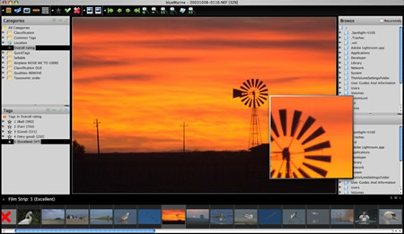

使用 NetBeans 平台构建桌面应用程序可以为开发者节省大量时间。
NetBeans 平台是桌面应用程序的通用基础。它提供所有大型桌面应用程序共有的服务：窗口管理、菜单、设置和存储、更新管理器和文件访问。领先的优势在于可以重用这些标准组件，并允许您集中处理应用程序业务逻辑。
NetBeans 平台以现成可用的方式提供了所有这些功能。您再也不需要自行对这些基本功能或其他基本功能进行手动编码了。了解某些基于 NetBeans 的应用程序的外观。此平台不会给应用程序增加大量开销，但会节省大量时间和工作。
NetBeans 平台提供了一个灵活可靠的应用程序体系结构。您的应用程序没必要与 IDE 完全一样。它可以帮助您节省数年的开发时间。NetBeans 平台为您免费提供了一个经过时间考验的体系结构。这是一个支持可持续开发实践的体系结构。因为 NetBeans 平台体系结构是模块化的，所以很容易创建功能强大的可扩展应用程序。